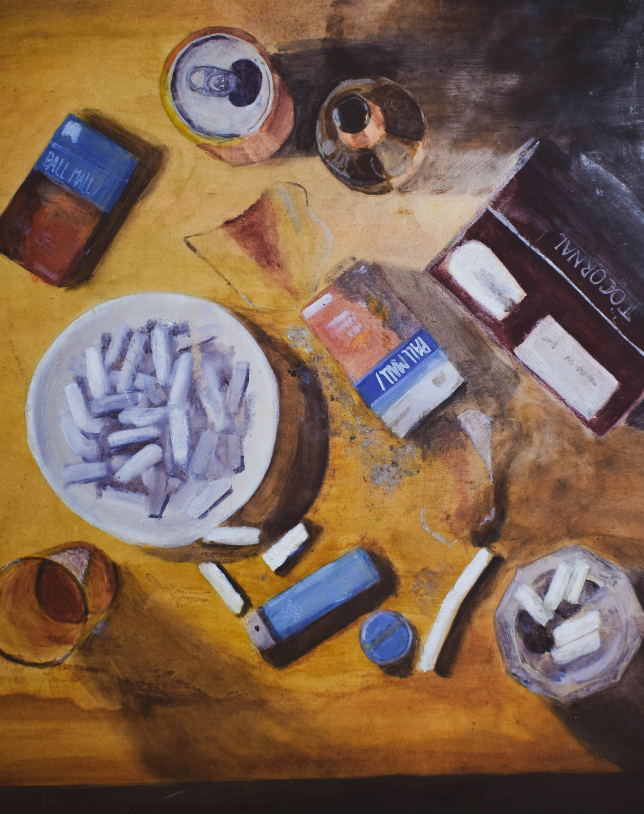
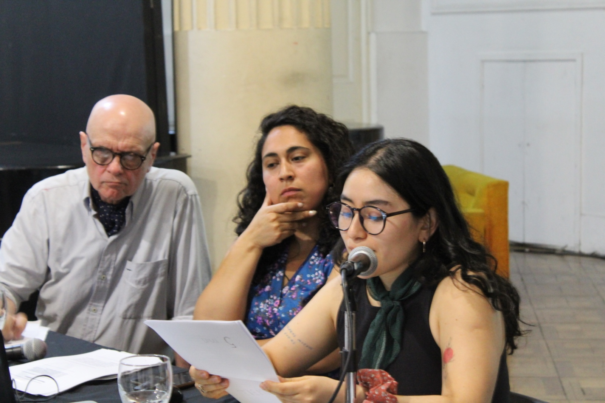
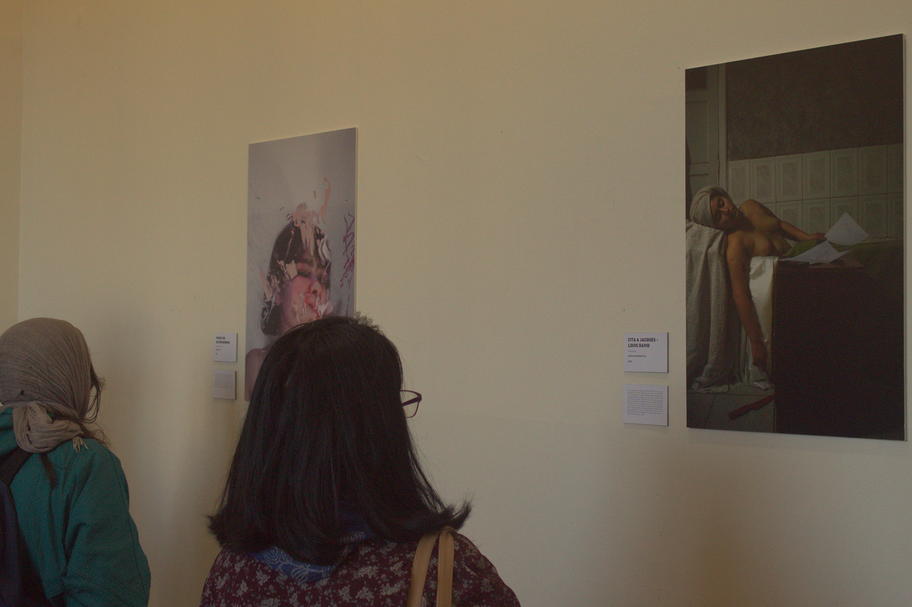
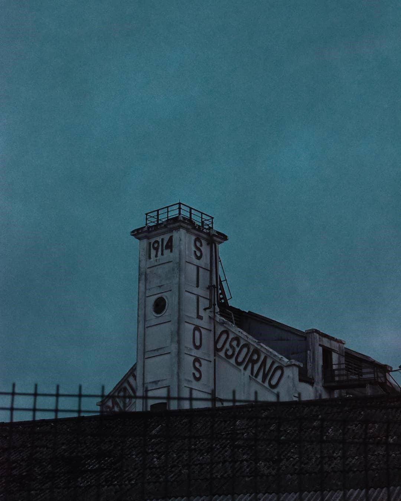
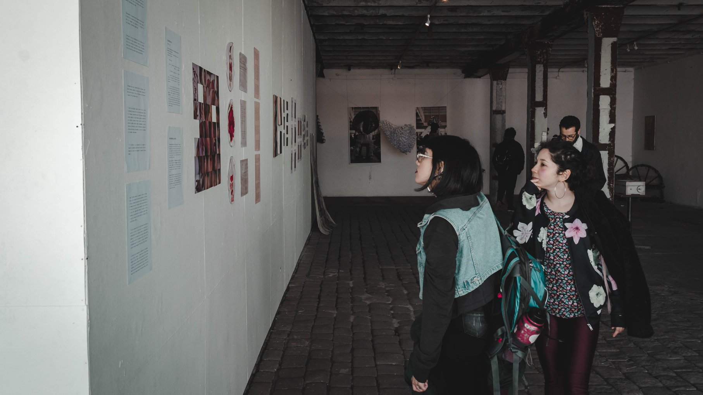
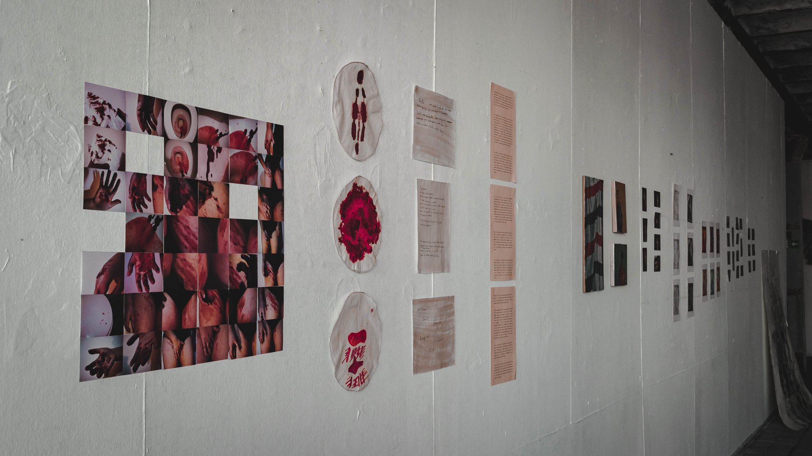

- Expositora en XVI Jornadas Estudios e Investigaciones Arte e ideología del Instituto de Teoría e Historia del Arte "Julio E. Payró", Facultad de Filosofía y Letras, UBA. (2024)
- Curadora de Habitar: espacios y memorias en Corporación Cultural de Osorno. (2022)
- Exposición colectiva Juntas dar la vuelta curada por Valentina Inostroza, Casa Prochelle, Corporación Cultural Municipal Valdivia. (2022)
- Curadora de Trama Revisión a cuatro artistas de la ciudad de Osorno en Corporación Cultural de Osorno. (2021)
- Participe en Cortes de luz, Antología artística en pandemia, primera edición (2020). Rancagua, Chile: Editorial i con bototos.
- Mamá, ¿hoy sí se puede salir? presentada en Señales en espera, Galería Réplica. (2020)
- Lugar donde se encierra, presentada en Situación documental, Laboratorio Antropología Audiovisual de la Dirección Museológica UACh. (2020)
- Postal feminista en resistencia, presentada en el libro de artista compilación 18.10: La revuelta de los rotos, Colectivo Tramarte. (2020)
- Exposición Postales feministas (2020). Campus Los Canelos, Universidad de Austral de Chile, Valdivia.
- Fanzine Postales feministas, 6to evento Internacional de Arte Correo, Museo de Arte Cañadense, Argentina. (2019)
- Participe exposición colectiva Costuras Interdisciplinarias en Museo de Arte Contemporáneo Valdivia. (2018)
- Participe en exposición colectiva de dibujo en el Museo Philippi, Valdivia. (2018)
- Las Meninas obra colectiva donada al hospital base de Valdivia. (2017)







